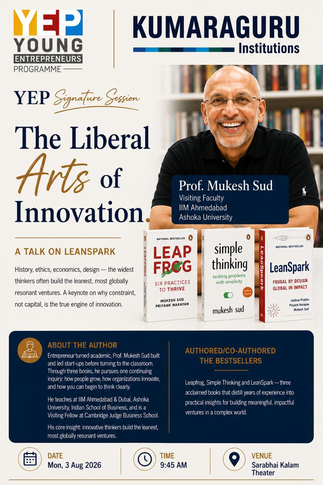
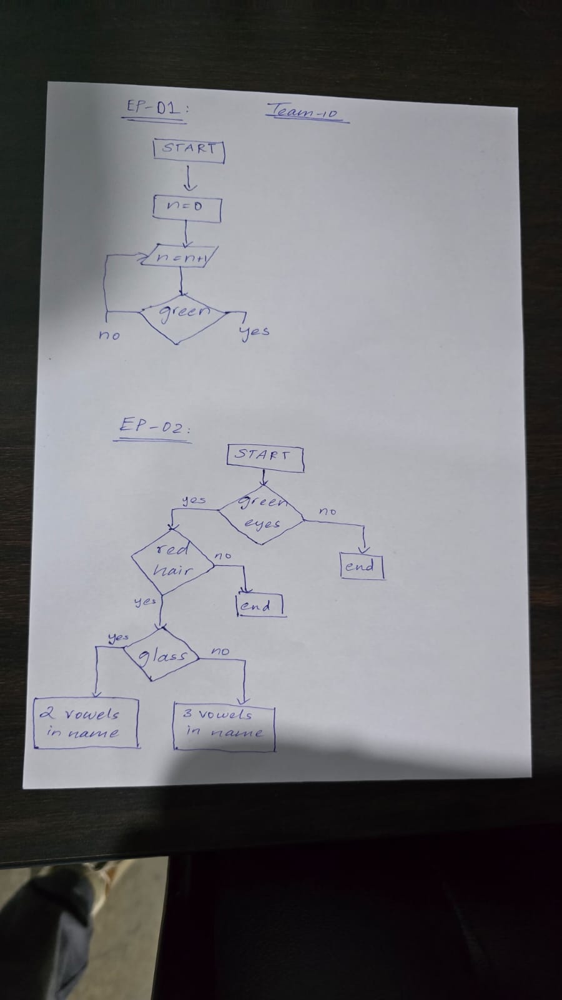
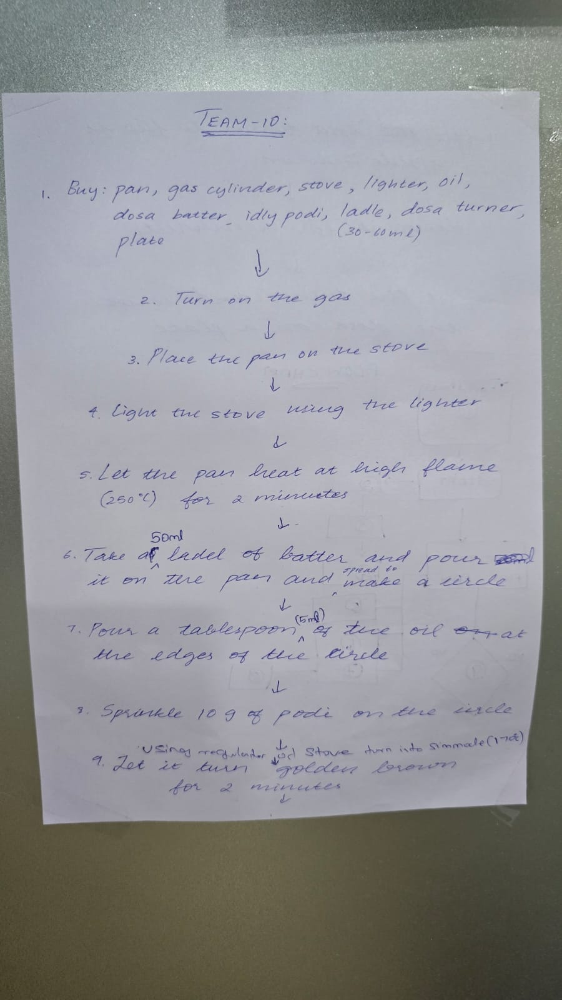
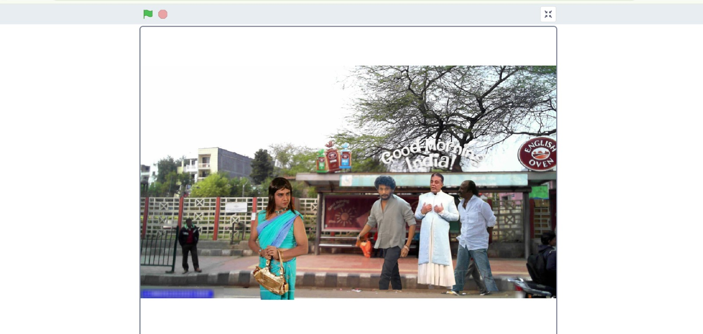
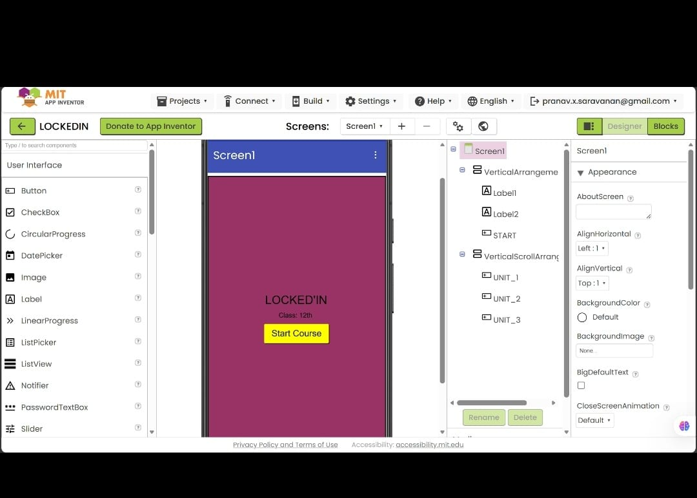
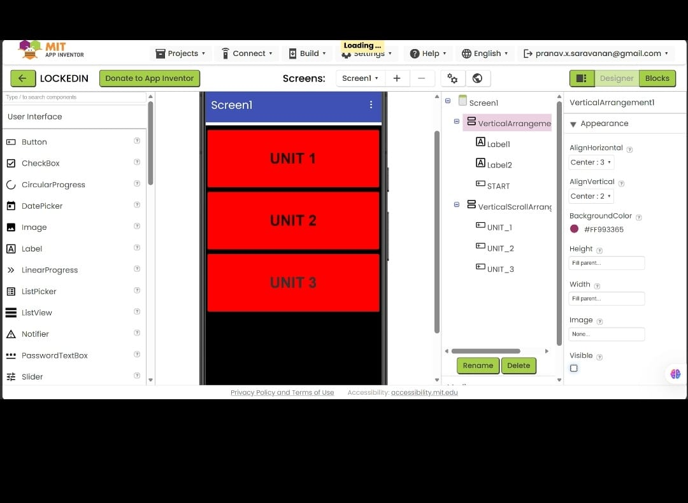
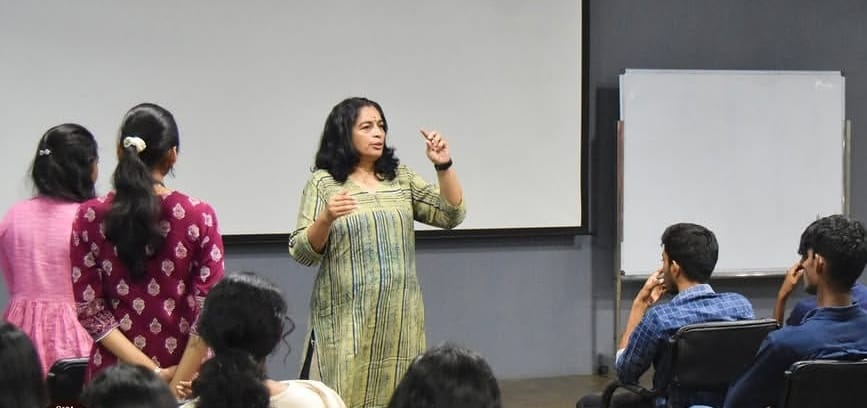

A practical week focused on innovation, logical thinking, programming, app development, and human-centered design.

The week began with a YEP keynote by Prof. Mukesh Sud from IIM Ahmedabad on "The Liberal Arts of Innovation". The session introduced us to the idea that constraints can become a driving force for innovation, rather than relying only on capital and resources.
We explored how disciplines such as history, ethics, economics, and design can be combined to approach complex problems from different perspectives.


Day 2 focused on developing
algorithmic and logical thinking.
We explored process flowcharts, counter loops such as
n = n + 1, and decision trees inspired by the
Think Like a Coder series.
As a hands-on team activity, we created a step-by-step flowchart for cooking the perfect Podi Dosa. This helped us understand how everyday tasks can be converted into structured algorithms using parameters, conditions, and decision loops.

Day 3 introduced us to both visual programming and text-based programming. During the morning session, we created interactive animations in Scratch using sprites, backdrops, (x, y) movement, and audio synchronization.
In the afternoon, we transitioned to Python programming. We explored data types, list operations, string and list concatenation, and functions.


Day 4 focused on no-code Android application development using MIT App Inventor. Our team developed an educational application designed to organize study notes class-wise and unit-wise.
The application included a landing interface with Start Course, followed by scrollable menus for Unit 1, Unit 2, and Unit 3. We also implemented the required block-based event logic.
The activity resulted in a functional Android APK prototype designed to make study resources easier for students to access.

Day 5 focused on Applied Design Thinking through an interactive masterclass conducted by Dr. Meera.
We explored the human-centered design process through Empathize, Ideate, Prototype, and Test. The practical session involved creating "How Might We..." problem statements, developing low-fidelity prototypes, and collecting feedback from users.
Week 2 provided a strong combination of innovation, algorithmic thinking, programming, application development, and design thinking. The activities helped us understand how to move from an idea to a structured problem, develop a solution, build a prototype, and consider user feedback.
Overall, the week strengthened our technical skills, logical thinking, creativity, teamwork, and problem-solving abilities.